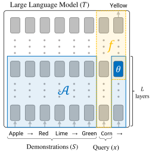
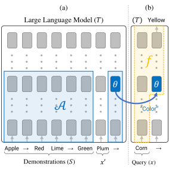
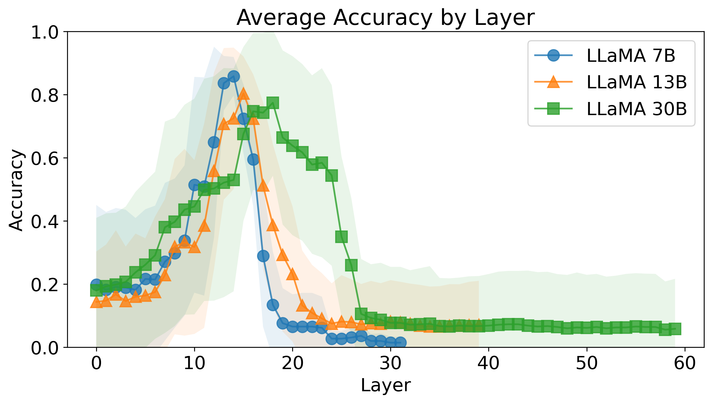
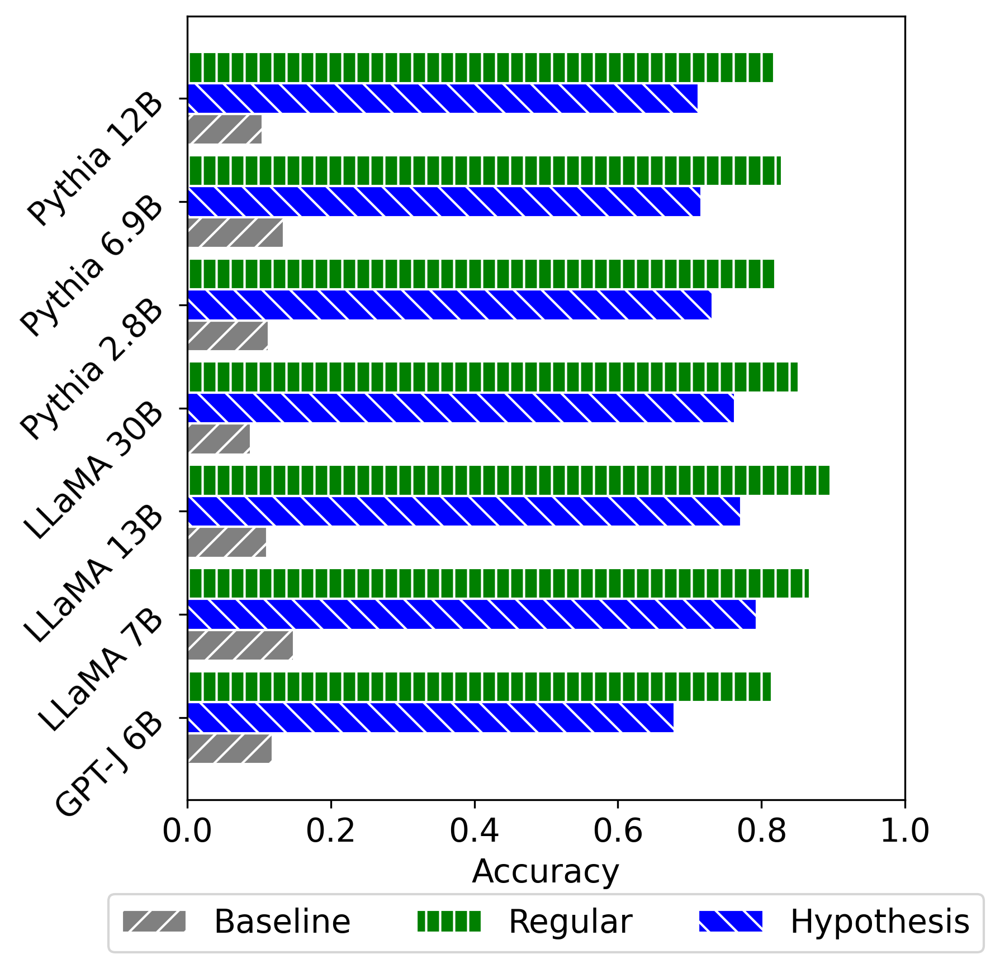
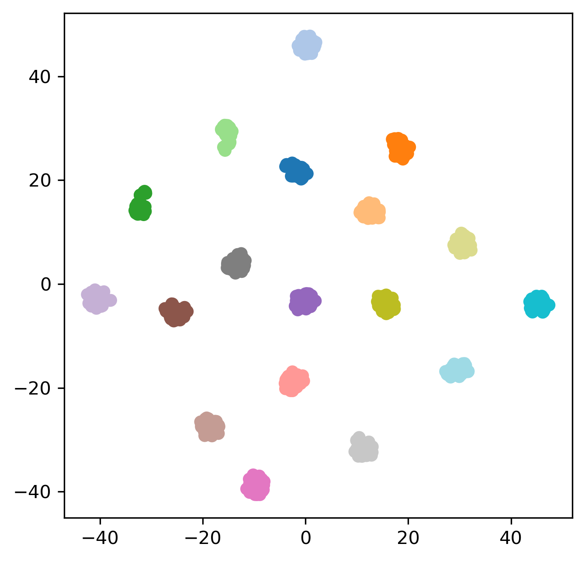
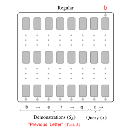
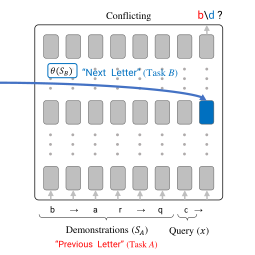
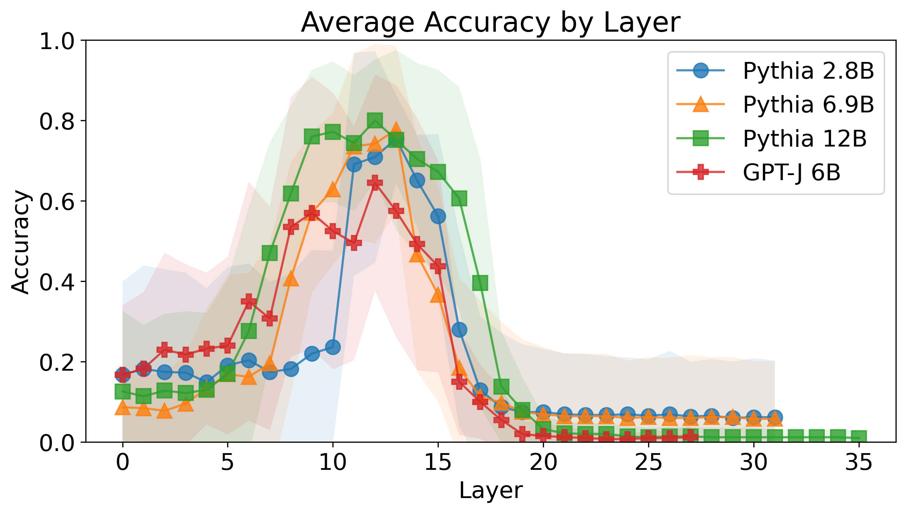
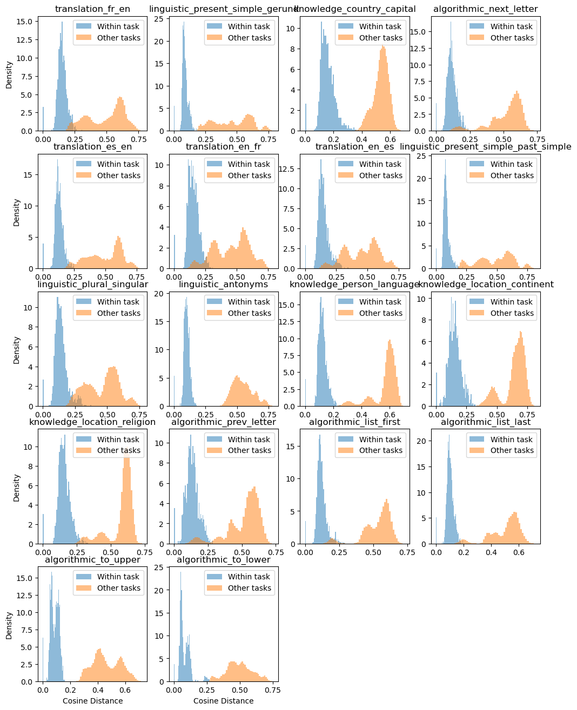
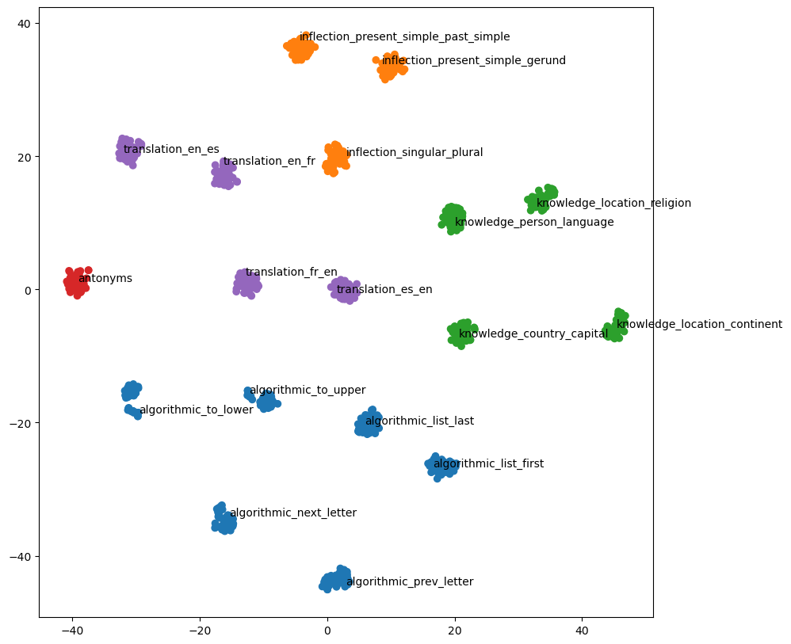

In-Context Learning Creates Task Vectors
Abstract摘要
In-context learning (ICL) in Large Language Models (LLMs) has emerged as a powerful new learning paradigm. However, its underlying mechanism is still not well understood. In particular, it is challenging to map it to the “standard” machine learning framework, where one uses a training set $S$ to find a best-fitting function $f(x)$ in some hypothesis class. Here we make progress on this problem by showing that the functions learned by ICL often have a very simple structure: they correspond to the transformer LLM whose only inputs are the query $x$ and a single “task vector” calculated from the training set. Thus, ICL can be seen as compressing $S$ into a single task vector $\boldsymbol{\theta}(S)$ and then using this task vector to modulate the transformer to produce the output. We support the above claim via comprehensive experiments across a range of models and tasks.
大语言模型（LLMs）中的上下文学习（ICL）已成为一种强大的新型学习范式。然而，其底层机制仍未得到充分理解。具体而言，将其对应到“标准”机器学习框架仍具有挑战性；在该框架中，人们利用训练集 $S$，在某个假设类中寻找拟合效果最好的函数 $f(x)$。本文通过揭示 ICL 学得的函数通常具有非常简单的结构，在这一问题上取得了进展：这些函数对应于一个 Transformer LLM，其输入仅包括查询 $x$ 和一个由训练集计算得到的“任务向量”。因此，ICL 可以被视为先将 $S$ 压缩为单个任务向量 $\boldsymbol{\theta}(S)$，再利用该任务向量调制 Transformer 以生成输出。我们在一系列模型和任务上开展了全面实验，为上述论断提供支持。

Figure 1: ICL as learning in a Hypothesis Class. In ICL, one provides an LLM with a prompt including demonstrations $S$ of some task, and a query $x$. The model generates the output for $x$ (here “Yellow”). We show that the underlying process can be broken down into two parts: $\mathcal{A}$, a “learning algorithm” (marked in blue), computes a query-agnostic vector $\boldsymbol{\theta}(S)$, which we view as a parameter of a function in a hypothesis class. The second part, denoted by $f$ and marked in yellow, is the application of the rule defined by $\boldsymbol{\theta}$ on the query $x$, without direct dependence on $S$.
图 1：将 ICL 视为假设类中的学习。在 ICL 中，向 LLM 提供的提示包含某项任务的示例 $S$ 和一个查询 $x$。模型生成 $x$ 对应的输出（此处为“黄色”）。我们表明，其底层过程可以分解为两部分：$\mathcal{A}$ 是一个“学习算法”（以蓝色标记），用于计算一个与查询无关的向量 $\boldsymbol{\theta}(S)$，我们将其视为假设类中某个函数的参数。第二部分记为 $f$，以黄色标记，表示将 $\boldsymbol{\theta}$ 所定义的规则应用于查询 $x$，而不直接依赖于 $S$。
1 Introduction1 引言
Large language models have improved dramatically over the last several years. One striking property of these models is that they can learn new rules from very few demonstrations. For instance, a model can be prompted with the input “Apple $\rightarrow$ Red, Lime $\rightarrow$ Green, Corn $\rightarrow$” and produce the output “Yellow”. The model has thus learned a mapping based on just two examples, which it can apply correctly to new examples. This capability, referred to as In-Context Learning (ICL), has been used extensively, yielding impressive empirical results Brown et al. (2020); Liu et al. (2023); Dong et al. (2022).
过去几年中，大语言模型取得了显著进步。这些模型的一个突出特性是，它们能够从极少量示例中学习新规则。例如，可以向模型提供输入提示“苹果 $\rightarrow$ 红色，青柠 $\rightarrow$ 绿色，玉米 $\rightarrow$”，模型便会生成输出“黄色”。由此，模型仅凭两个示例就学得了一个映射，并能将其正确应用于新示例。这种能力被称为上下文学习（ICL），已得到广泛应用，并取得了令人瞩目的实证结果 Brown et al. (2020); Liu et al. (2023); Dong et al. (2022)。
Given this success, it is natural to ask what is the underlying mechanism behind ICL. Namely, how does the model internally use the demonstrations $S$ and the query $x$ to produce the required output? Here we approach this question by utilizing the concept of a hypothesis class from statistical learning theory Shalev-Shwartz and Ben-David (2014). In the learning-theoretic formulation, one typically considers a hypothesis class $\mathcal{H}$, where every element of $\mathcal{H}$ is a function $h(x;\boldsymbol{\theta})$, operating on the input $x$, and specified by a parameter vector $\boldsymbol{\theta}$. For example, if $x\in\mathbb{R}^{d}$ then the class $\mathcal{H}$ could be the set of linear classifiers, defined by a coefficient vector $\boldsymbol{\theta}$ as $h(x;\boldsymbol{\theta})=\boldsymbol{\theta}\cdot x$. Learning algorithms seek an element $h\in\mathcal{H}$ that fits the training set well. This is known as Empirical Risk Minimization.
鉴于这一成功，人们自然会问，ICL 背后的内在机制是什么。具体而言，模型在内部如何利用示例 $S$ 和查询 $x$ 来生成所需的输出？这里，我们利用统计学习理论 Shalev-Shwartz and Ben-David (2014) 中的假设类概念来探讨这一问题。在学习理论的表述中，通常考虑一个假设类 $\mathcal{H}$，其中 $\mathcal{H}$ 的每个元素都是一个作用于输入 $x$、由参数向量 $\boldsymbol{\theta}$ 确定的函数 $h(x;\boldsymbol{\theta})$。例如，若 $x\in\mathbb{R}^{d}$，则假设类 $\mathcal{H}$ 可以是线性分类器的集合，这些分类器由系数向量 $\boldsymbol{\theta}$ 定义为 $h(x;\boldsymbol{\theta})=\boldsymbol{\theta}\cdot x$。学习算法旨在寻找一个能够良好拟合训练集的元素 $h\in\mathcal{H}$。这称为经验风险最小化。
It is unclear whether ICL operates in such a way because the prediction is performed via $T([S,x])$, where $T$ is typically an auto-regressive transformer and $[S,x]$ is a concatenation of the tokens in $S$ and $x$. Thus, in the general case, it can be an arbitrary function that operates on $S$ and $x$ to produce the output. This can include “non-parametric” methods such as nearest-neighbor. Recent work has begun to explore this question. For example, it was shown that when training a transformer from scratch to perform linear regression in context, the emerging learning algorithm is similar to Stochastic Gradient Descent Akyürek et al. (2022); von Oswald et al. (2022). However, for LLMs performing more complex natural language tasks, it is not at all clear what the hypothesis space may be.
目前尚不清楚 ICL 是否以这种方式运作，因为其预测通过 $T([S,x])$ 完成，其中 $T$ 通常是一个自回归 Transformer，而 $[S,x]$ 是 $S$ 和 $x$ 中词元的拼接。因此，在一般情况下，它可以是作用于 $S$ 和 $x$ 并生成输出的任意函数。这可以包括最近邻等“非参数”方法。近期工作已开始探索这一问题。例如，已有研究表明，从头训练一个 Transformer 以在上下文中执行线性回归时，所涌现出的学习算法类似于随机梯度下降 Akyürek et al. (2022); von Oswald et al. (2022)。然而，对于执行更复杂自然语言任务的 LLMs，其假设空间可能是什么仍完全不清楚。
In this work, we show that on a wide range of tasks, ICL in LLMs can be viewed as working on a very natural hypothesis space. We argue that, given a training set $S$, the transformer maps it into a “task vector” $\boldsymbol{\theta}(S)$ that essentially represents the mapping/rule described in $S$. Namely, given the transformer $T$ and a vector $\boldsymbol{\theta}$, we can construct a new function $f(x;\boldsymbol{\theta})$ that implements the task. The function $f$ is very similar to the original transformer applied to $x$ without demonstrations but instead modulated by $\boldsymbol{\theta}$ (see Fig. 2).
在本研究中，我们表明，在广泛的任务上，LLMs 中的 ICL 可以被视为在一个非常自然的假设空间中运作。我们认为，给定训练集 $S$，Transformer 会将其映射为一个“任务向量” $\boldsymbol{\theta}(S)$，该向量实质上表示了 $S$ 中描述的映射或规则。具体而言，给定 Transformer $T$ 和向量 $\boldsymbol{\theta}$，我们可以构造一个实现该任务的新函数 $f(x;\boldsymbol{\theta})$。函数 $f$ 与原始 Transformer 在不提供示例的情况下应用于 $x$ 时非常相似，只是改为由 $\boldsymbol{\theta}$ 进行调制（见图 2）。
Our view is also related to soft prompts Lester et al. (2021), since both approaches modulate the function of the transformer towards a particular task. However, in ICL, task vectors are calculated in the forward pass rather than being fine-tuned.
我们的观点也与软提示有关 Lester et al. (2021)，因为这两种方法都会针对特定任务调制 Transformer 的功能。然而，在 ICL 中，任务向量是在前向传播过程中计算得到的，而非通过微调获得。
Our contributions include proposing a hypothesis-class based mechanistic view of ICL, and conducting experiments to validate our view on a range of publicly available LLMs and a diverse set of tasks. Our results further the understanding of ICL and may have practical implications for the efficient adaptation of LLMs to perform specific tasks.
我们的贡献包括提出一种基于假设类的 ICL 机制视角，并在一系列公开可用的 LLM 和多种任务上开展实验，以验证这一视角。我们的结果加深了对 ICL 的理解，并可能对高效适配 LLM 以执行特定任务具有实际意义。
2 A Hypothesis Class View of ICL2 ICL 的假设类视角
Motivated by the hypothesis class view of learning theory, our goal is to understand if ICL maps the set of demonstrations $S$ to a function on the query $x$ and how this mapping occurs. Specifically, we seek to see if ICL converts $S$ into $\boldsymbol{\theta}$ - the “parameters” of a function within a certain hypothesis space. Our empirical findings suggest this view is applicable, shedding light on the structure of the hypothesis space on which ICL can be viewed to operate.
受学习理论中假设类视角的启发，我们旨在理解 ICL 是否将示例集 $S$ 映射为作用于查询 $x$ 的函数，以及这一映射是如何实现的。具体而言，我们试图考察 ICL 是否将 $S$ 转换为 $\boldsymbol{\theta}$，即某个假设空间中一个函数的“参数”。我们的实证结果表明，这一视角是适用的，并揭示了可将 ICL 视为在其中运行的假设空间的结构。
2.1 Theoretical Framework2.1 理论框架
We use $T$ to denote a decoder-only transformer LLM, $S$ to denote the set of demonstrations (i.e. training examples) used as input to ICL, and $x$ to denote the query that ICL is asked to provide an output for. We use $T([S,x])$ to denote the output of ICL on the concatenation of $S$ and $x$.
我们用 $T$ 表示仅含解码器的 Transformer LLM，用 $S$ 表示作为 ICL 输入的示例集（即训练样本），用 $x$ 表示要求 ICL 为其提供输出的查询。我们用 $T([S,x])$ 表示 ICL 在 $S$ 与 $x$ 拼接后的输入上的输出。
To demonstrate that ICL operates within a hypothesis space, we aim to show that its underlying mechanism can be broken down into two parts:
为证明 ICL 在某个假设空间内运行，我们旨在表明其底层机制可以分解为两个部分：
• A “Learning Algorithm” (denoted by $\mathcal{A}$) that maps $S$ into a “task vector” $\boldsymbol{\theta}$, independent of the query $x$. Given that attention layers can access both $S$ and $x$, this independence is not trivial.
• 一个“学习算法”（记为 $\mathcal{A}$），将 $S$ 映射为一个独立于查询 $x$ 的“任务向量” $\boldsymbol{\theta}$。鉴于注意力层可以同时访问 $S$ 和 $x$，这种独立性并非显然成立。
• A “Rule Application” (denoted by $f$) which maps the query $x$ to the output, based on $\boldsymbol{\theta}\equiv\mathcal{A}(S)$, without direct dependence on $S$. Again, this independence is not trivial.
• 一个“规则应用”（记为 $f$），基于 $\boldsymbol{\theta}\equiv\mathcal{A}(S)$ 将查询 $x$ 映射为输出，而不直接依赖于 $S$。同样，这种独立性也并非显然成立。
Thus, we consider the following mapping from a set of demonstrations and a query to the predicted output: $T([S,x])=f(x;\mathcal{A}(S))$.
因此，我们考虑以下从示例集和查询到预测输出的映射：$T([S,x])=f(x;\mathcal{A}(S))$。
If we can break down the forward pass of the LLM into the above two components, we can view ICL as operating on the following hypothesis class: $\mathcal{H}=\{f(\cdot;\boldsymbol{\theta})\mid\boldsymbol{\theta}\}$. In the next section we propose an implementation of such a class.
如果能够将 LLM 的前向传播分解为上述两个组成部分，就可以将 ICL 视为在以下假设类上运行：$\mathcal{H}=\{f(\cdot;\boldsymbol{\theta})\mid\boldsymbol{\theta}\}$。下一节中，我们将提出这样一个假设类的实现方式。
2.2 A Proposed Hypothesis Class2.2 提出的假设类
There are many possible realizations of the above framework, that correspond to different choices of $\mathcal{A}$ and $f$. We next describe the realization we focus on, which naturally follows from the transformer architecture. We consider an ICL setting as in Fig. 1, where the input ends with a query $x$ (i.e., Corn) followed by an “$\rightarrow$” symbol. As mentioned above, we view learning as composed of two steps: calculating a parameter vector $\boldsymbol{\theta}$ based on the training sample $S$, and applying the rule defined by this parameter vector to the query $x$. A presumably simple way for a transformer to do this is for the first $L$ layers of the $\rightarrow$ representations to calculate $\boldsymbol{\theta}$ and then for the remaining layers to take $\boldsymbol{\theta}$ and $x$ as input and produce an output. See Fig. 1. Recall that $S$ and $x$ are accessible to the transformer at any layer, presenting a challenge with our view.
上述框架存在许多可能的实现方式，分别对应于对 $\mathcal{A}$ 和 $f$ 的不同选择。接下来，我们描述本文重点关注的实现方式，该方式自然源于 Transformer 架构。我们考虑图 1 所示的 ICL 设置，其中输入以查询 $x$（即 Corn）及其后的“$\rightarrow$”符号结尾。如上所述，我们将学习视为由两个步骤组成：根据训练样本 $S$ 计算参数向量 $\boldsymbol{\theta}$，并将该参数向量定义的规则应用于查询 $x$。对 Transformer 而言，一种可能较为简单的实现方式是，在前 $L$ 层通过 $\rightarrow$ 的表示计算 $\boldsymbol{\theta}$，随后由其余层以 $\boldsymbol{\theta}$ 和 $x$ 为输入并生成输出。参见图 1。请注意，Transformer 在任意一层均可访问 $S$ 和 $x$，这对我们的视角构成了挑战。
In the following sections, we address this challenge and present experiments validating our view. Namely, we show that we can isolate our proposed $\mathcal{A}$ and $f$ in the forward pass of LLMs performing ICL. We also show that the $\boldsymbol{\theta}$ vectors are interpretable and correspond to learned tasks.
在后续各节中，我们将应对这一挑战，并通过实验验证我们的视角。具体而言，我们表明，在执行 ICL 的 LLM 的前向传播中，可以分离出所提出的 $\mathcal{A}$ 和 $f$。我们还表明，$\boldsymbol{\theta}$ 向量具有可解释性，并且对应于学得的任务。

Figure 2: Separating $\mathcal{A}$ and $f$. To make $\boldsymbol{\theta}$ independent of the query $x$, we use a dummy query ($x^{\prime}=\mbox{Plum}$) and use the representation of $\rightarrow$ at the $L^{th}$ layer as $\boldsymbol{\theta}$. The vector $\boldsymbol{\theta}$ is then patched at the same layer during a forward pass of a transformer that only takes $x$ and $\rightarrow$ as input, to prevent the direct dependence of $f$ on $S$.
图 2：分离 $\mathcal{A}$ 和 $f$。为使 $\boldsymbol{\theta}$ 独立于查询 $x$，我们使用一个虚拟查询（$x^{\prime}=\mbox{Plum}$），并将第 $L^{th}$ 层中 $\rightarrow$ 的表示用作 $\boldsymbol{\theta}$。随后，在一个仅以 $x$ 和 $\rightarrow$ 为输入的 Transformer 的前向传播过程中，将向量 $\boldsymbol{\theta}$ 植入同一层，以避免 $f$ 直接依赖于 $S$。
3 Validity of the Hypothesis Class View3 假设类视角的有效性
We first show that separating the forward pass into the two distinct components $\mathcal{A}$ and $f$, defined in §2.2, maintains the high accuracy of ICL.
我们首先表明，将前向传播分离为第 2.2 节定义的两个独立组成部分 $\mathcal{A}$ 和 $f$，仍能保持 ICL 的高准确率。
3.1 Separating $\mathcal{A}$ and $f$3.1 分离 $\mathcal{A}$ 和 $f$
We face some challenges in a regular forward pass: first, the initial $L$ layers that correspond to $\mathcal{A}$, updating the representations of $\rightarrow$ to create $\boldsymbol{\theta}$, can attend to the query $x$. Thus, they may depend on $x$, creating an unwanted dependence of $\boldsymbol{\theta}$ on $x$. Second, the remaining layers that correspond to $f$, may directly access $S$, instead of using only $x$ and $\boldsymbol{\theta}$.
在常规前向传播中，我们面临一些挑战：首先，对应于 $\mathcal{A}$ 的前 $L$ 层通过更新 $\rightarrow$ 的表示来生成 $\boldsymbol{\theta}$，而这些层可以通过注意力访问查询 $x$。因此，它们可能依赖于 $x$，从而使 $\boldsymbol{\theta}$ 对 $x$ 产生不期望的依赖。其次，对应于 $f$ 的其余层可能直接访问 $S$，而非仅使用 $x$ 和 $\boldsymbol{\theta}$。
We propose the following procedure to tackle these challenges: to solve the first problem, we introduce a “dummy query” $x^{\prime}$ and calculate the representations of $\rightarrow$ using that query. We use the representation of $\rightarrow$ after the first $L$ layers, calculated using $x^{\prime}$, as the vector $\boldsymbol{\theta}$ (as demonstrated on the left side of Fig. 2). An alternative was to block attention to $x$, but it led to poor performance. To solve the second problem of calculating $f(x,\boldsymbol{\theta})$ without allowing direct dependence on $S$, we perform a forward pass of the transformer only on $x$ and $\rightarrow$, and “patch” the $\boldsymbol{\theta}$ we previously extracted at the $L$th layer of the $\rightarrow$ (right side of Fig. 2).
我们提出以下流程来应对这些挑战：为解决第一个问题，我们引入一个“虚拟查询”$x^{\prime}$，并使用该查询计算 $\rightarrow$ 的表示。我们将使用 $x^{\prime}$ 计算得到的、经过前 $L$ 层后的 $\rightarrow$ 的表示用作向量 $\boldsymbol{\theta}$（如图 2 左侧所示）。另一种方法是阻断对 $x$ 的注意力，但其性能较差。为解决第二个问题，即在不允许直接依赖 $S$ 的情况下计算 $f(x,\boldsymbol{\theta})$，我们仅对 $x$ 和 $\rightarrow$ 执行 Transformer 前向传播，并将先前提取的 $\boldsymbol{\theta}$“修补”到 $\rightarrow$ 的第 $L$ 层（图 2 右侧）。
Table 1: A representative subset of the tasks used in the study with input $\rightarrow$ output examples.
表 1：本研究所用任务的一个代表性子集，附有输入 $\rightarrow$ 输出示例。
| Category 类别 | Task 任务 | Example 示例 |
| Algorithmic 算法类 | Next letter 下一个字母 | a $\rightarrow$ b |
| List first 列表首项 | a,b,c $\rightarrow$ a | |
| List last 列表末项 | a,b,c $\rightarrow$ c | |
| To uppercase 转为大写 | a $\rightarrow$ A | |
| Translation 翻译 | French to English 法语译为英语 | bonjour $\rightarrow$ hello 你好 $\rightarrow$ 你好 |
| Spanish to English 西班牙语译为英语 | hola $\rightarrow$ hello 你好 $\rightarrow$ 你好 | |
| Linguistic 语言类 | Present to gerund 现在时转为动名词 | go $\rightarrow$ going 去 $\rightarrow$ 去 |
| Singular to plural 单数转为复数 | cat $\rightarrow$ cats 猫 $\rightarrow$ 猫 | |
| Antonyms 反义词 | happy $\rightarrow$ sad 快乐 $\rightarrow$ 悲伤 | |
| Knowledge 知识 | Country to Capital 国家到首都 | France $\rightarrow$ Paris |
| Person to Language 人物到语言 | Macron $\rightarrow$ French |

Figure 3: Accuracy for each choice of the intermediate layer $L$, averaged across all tasks. Solid lines show average values, and shaded areas standard deviations.
图 3：选择不同中间层 $L$ 时在所有任务上的平均准确率。实线表示平均值，阴影区域表示标准差。
3.2 Tasks and Models3.2 任务与模型
Tasks任务
We consider a diverse set of 18 tasks across 4 categories: algorithmic, translation, linguistic, and factual knowledge. For simplicity, we limit ourselves to single-token outputs. A representative subset of the tasks is described in Tab. 1. A complete detailed table, as well as more information regarding the data, are provided in § A.1.
我们考察了涵盖算法、翻译、语言和事实知识这 4 个类别的 18 项不同任务。为简化起见，我们仅考虑单个词元的输出。表 1 描述了这些任务的一个代表性子集。完整的详细表格以及有关数据的更多信息见附录 A.1。
Models模型
We use multiple open LLMs: LLaMA 7B, 13B, and 30B Touvron et al. (2023), GPT-J 6B Wang and Komatsuzaki (2021), and Pythia 2.8B, 6.9B, and 12B Biderman et al. (2023).
我们使用了多个开放 LLM：LLaMA 7B、13B 和 30B Touvron et al. (2023)，GPT-J 6B Wang and Komatsuzaki (2021)，以及 Pythia 2.8B、6.9B 和 12B Biderman et al. (2023)。
3.3 Finding $L$3.3 确定 $L$
The mechanism we described in §2.2 has a free parameter - the layer $L$ where $\mathcal{A}$ ends and $f$ begins. We use the proposed $(\mathcal{A},f)$ implementation for different choices of $L$ and evaluate the accuracy on a development set to find the best layer.
我们在第 2.2 节描述的机制有一个自由参数，即 $\mathcal{A}$ 结束且 $f$ 开始的层 $L$。我们针对不同的 $L$ 取值使用所提出的 $(\mathcal{A},f)$ 实现，并在开发集上评估准确率，以确定最佳层。
Fig. 3 shows the accuracy on the development set, for different choices of $L$. We focus here on the LLaMA models and include the rest in § A.2. Interestingly, all models exhibit a performance peak at a similar intermediate layer, irrespective of their parameters and layer count differences.
图 3 展示了不同 $L$ 取值下在开发集上的准确率。这里我们重点讨论 LLaMA 模型，其余模型的结果见附录 A.2。有趣的是，尽管各模型的参数量和层数不同，它们的性能峰值均出现在相近的中间层。

Figure 4: Average accuracy across all tasks for each model, using each of the three procedures: Baseline, Regular and Hypothesis.
图 4：各模型分别使用基线、常规和假设这三种流程时，在所有任务上的平均准确率。
3.4 Accuracy of Hypothesis Based Prediction3.4 基于假设的预测准确率
We next compare the accuracy of the $(\mathcal{A},f)$ mechanism to that of a regular forward pass performing ICL. For each model and task, we evaluate the following three procedures:
接下来，我们将 $(\mathcal{A},f)$ 机制的准确率与执行 ICL 的常规前向传播的准确率进行比较。对于每个模型和每项任务，我们评估以下三种流程：
• Regular An application of the LLM to the demonstrations $S$ and query $x$. Namely $T([S,x])$, as in regular ICL.
• 常规 将 LLM 应用于示例 $S$ 和查询 $x$。即与常规 ICL 一样，计算 $T([S,x])$。
• Hypothesis Our proposed procedure from § 3.1 where $\mathcal{A}$ generates $\boldsymbol{\theta}$ using a dummy $x^{\prime}$, and $f(\cdot;\boldsymbol{\theta})$ is applied to $x$ by running the transformer on $[x,\rightarrow]$ with $\boldsymbol{\theta}$ patched at layer $L$ of $\rightarrow$.
• 假设 我们在第 3.1 节提出的流程，其中 $\mathcal{A}$ 使用虚拟查询 $x^{\prime}$ 生成 $\boldsymbol{\theta}$，随后在 $[x,\rightarrow]$ 上运行 Transformer，并将 $\boldsymbol{\theta}$ 修补到 $\rightarrow$ 的第 $L$ 层，从而将 $f(\cdot;\boldsymbol{\theta})$ 应用于 $x$。
• Baseline A forward pass of the LLM only on $x$, without demonstrations $S$. That is, $T([x,\rightarrow])$. This is the same as the application of $f$ from our separated procedure, but without patching $\boldsymbol{\theta}$.
• 基线 仅对 $x$ 执行 LLM 的前向传播，不提供示例 $S$。即 $T([x,\rightarrow])$。这与我们分离后的流程中应用 $f$ 的过程相同，但不修补 $\boldsymbol{\theta}$。
Fig. 4 shows the average accuracy across all tasks of these 3 procedures, for each model. Full results are reported in Tab. 6 in § A.2. Across all models, our procedure maintains around 80-90% of the accuracy of regular ICL, while the baseline reaches only 10-20%. This shows that our proposed separation to $\mathcal{A}$ and $f$ provides a good empirical approximation of the process underlying ICL.
图 4 展示了各模型采用这 3 种流程时在所有任务上的平均准确率。完整结果见附录 A.2 的表 6。对于所有模型，我们的流程均能保持常规 ICL 准确率的约 80-90%，而基线仅能达到 10-20%。这表明，我们所提出的将过程分离为 $\mathcal{A}$ 和 $f$ 的方法，在经验上能够较好地近似 ICL 的底层过程。

Figure 5: A t-SNE plot of task vectors. A 2D t-SNE plot visualizing 50 task vectors for each task, each generated from a different choice of $S$ and $x^{\prime}$ using LLaMA 7B. Points are color-coded according to the task. Each task can be seen to form its own distinct cluster.
图 5：任务向量的 t-SNE 图。该二维 t-SNE 图展示了每项任务的 50 个任务向量，每个向量均使用 LLaMA 7B，根据不同的 $S$ 和 $x^{\prime}$ 选择生成。各点按任务以不同颜色标识。可以看到，每项任务均形成了各自独立的簇。
4 Robustness of Task Vectors4 任务向量的鲁棒性
In our setting, $\boldsymbol{\theta}$ is derived from $S$ and a dummy query $x^{\prime}$. It is natural to examine the robustness of $\boldsymbol{\theta}$ to variations in these inputs. Intuitively, if it represents the task, it should remain stable across different $S$ and $x^{\prime}$ values.
在我们的设定中，$\boldsymbol{\theta}$ 由 $S$ 和虚拟查询 $x^{\prime}$ 导出。自然需要考察 $\boldsymbol{\theta}$ 对这些输入变化的鲁棒性。直观而言，如果它表示的是任务，那么在 $S$ 和 $x^{\prime}$ 取不同值时，它应保持稳定。
To test this, we use LLaMA 7B to generate 50 task vectors per task with varied $S$ and $x^{\prime}$ and conduct two analyses.
为检验这一点，我们改变 $S$ 和 $x^{\prime}$，使用 LLaMA 7B 为每项任务生成 50 个任务向量，并开展两项分析。
Geometry of $\boldsymbol{\theta}$$\boldsymbol{\theta}$ 的几何结构
A t-SNE dimensionality reduction (Fig. 5) reveals that the task vectors form distinct clusters, each containing task vectors of a single task. Fig. 9 further shows proximity between tasks of the same category, strengthening the idea that they encapsulate task understanding.
t-SNE 降维结果（图 5）表明，任务向量形成了彼此分离的簇，每个簇仅包含同一项任务的任务向量。图 9 进一步显示，同一类别的任务彼此接近，这进一步支持了任务向量蕴含任务理解这一观点。
Variability of $\boldsymbol{\theta}$$\boldsymbol{\theta}$ 的变异性
Fig. 8 shows histograms of distances within and across tasks. It can be seen that vectors within the same task are closer than those between different tasks, indicating that $\boldsymbol{\theta}$ is stable within tasks and not highly influenced by $x^{\prime}$ or $S$.
图 8 展示了任务内及任务间距离的直方图。可以看出，同一任务内的向量比不同任务间的向量更接近，这表明 $\boldsymbol{\theta}$ 在任务内保持稳定，且受 $x^{\prime}$ 或 $S$ 的影响较小。
5 Dominance of $\boldsymbol{\theta}$ Patching5 $\boldsymbol{\theta}$ 替换的主导作用
In §3 we prevented $f$ from directly accessing $S$. However, in a regular forward pass during ICL, the last token can attend to $S$. Here we verify that even in this case, $f$ mainly uses the task vector $\boldsymbol{\theta}$, without directly accessing the demonstrations $S$. To this end, we use a pair of tasks, $A$ and $B$, sharing the input space but differing on the output. We first use a “Regular” forward pass, where we provide the model with demonstrations $S$ for task $A$ (denoted $S_{A}$), to verify the model can perform this task using ICL. Then, we do a “Conflicting” forward pass, still providing $S_{A}$, while injecting $\boldsymbol{\theta}_{B}$. For more details, refer to Fig. 6 in §A.1.
在第 3 节中，我们阻止了 $f$ 直接访问 $S$。然而，在 ICL 过程中的常规前向传播中，最后一个词元可以通过注意力访问 $S$。这里我们验证，即使在这种情况下，$f$ 也主要使用任务向量 $\boldsymbol{\theta}$，而不直接访问示例 $S$。为此，我们使用一对任务 $A$ 和 $B$，二者共享输入空间，但输出不同。首先，我们执行一次“常规”前向传播，向模型提供任务 $A$ 的示例 $S$（记为 $S_{A}$），以验证模型能够通过 ICL 完成该任务。随后，我们执行一次“冲突”前向传播，仍然提供 $S_{A}$，同时注入 $\boldsymbol{\theta}_{B}$。更多细节参见附录 A.1 中的图 6。
In Tab.2, the “Regular” forward pass shows high accuracy on task $A$ (90%+), as anticipated. However, the “Conflicting” forward pass yields high accuracy on task $B$, corresponding to the injected task vector $\boldsymbol{\theta}$. This implies that the model mainly relies on $\boldsymbol{\theta}$, largely disregarding the demonstrations $S$ for task $A$. We note that the accuracy on task $B$ is slightly low, likely consistent with the performance dip seen in Fig. 6, and potentially further affected by the presence of $S$.
在表 2 中，正如预期，“常规”前向传播在任务 $A$ 上取得了较高的准确率（90% 以上）。然而，“冲突”前向传播在任务 $B$ 上取得了较高的准确率，该任务对应于注入的任务向量 $\boldsymbol{\theta}$。这意味着模型主要依赖 $\boldsymbol{\theta}$，在很大程度上忽略了任务 $A$ 的示例 $S$。我们注意到，任务 $B$ 上的准确率略低，这可能与图 6 中观察到的性能下降相一致，并且可能进一步受到 $S$ 存在的影响。
Table 2: Conflicting tasks experiment results. The model’s accuracy on the relevant task ($A$ in “Regular” and $B$ in “Conflicting”) is displayed for both scenarios.
表 2：冲突任务实验结果。表中展示了两种情形下模型在相应任务（“常规”情形下为 $A$，“冲突”情形下为 $B$）上的准确率。
| Task $A$ ($S$) 任务 $A$（$S$） | Task $B$ ($\boldsymbol{\theta}$) 任务 $B$（$\boldsymbol{\theta}$） | Regular 常规 | Conflicting 冲突 |
| Task $A$ 任务 $A$ | Task $B$ 任务 $B$ | ||
| Next Letter 下一个字母 | To Upper 转为大写 | 0.92 | 0.77 |
| List Last 列表末项 | List First 列表首项 | 0.95 | 0.78 |
| Present to Past 现在时转为过去时 | to Gerund 转为动名词 | 0.96 | 0.95 |
6 Interpreting $\boldsymbol{\theta}$6 对 $\boldsymbol{\theta}$ 的解释
The learned vector $\boldsymbol{\theta}$ intuitively captures information about the task demonstrated by $S$. Here we provide evidence supporting this interpretation. Since $\boldsymbol{\theta}$ is an intermediate hidden state of the transformer, we can employ a vocabulary projection method nostalgebraist (2020); Dar et al. (2022). Namely, we examine the top tokens in the distribution over the vocabulary induced by the hidden state.
直观而言，学习得到的向量 $\boldsymbol{\theta}$ 捕获了 $S$ 所示范任务的信息。这里我们提供支持这一解释的证据。由于 $\boldsymbol{\theta}$ 是 Transformer 的一个中间隐藏状态，我们可以采用词表投影方法 nostalgebraist (2020); Dar et al. (2022)。具体而言，我们考察由该隐藏状态诱导的词表分布中概率最高的词元。
Tab. 3 shows the top tokens for three tasks for LLaMA 13B (more models and tasks are provided in Tab. 7 in §A). In multiple cases, we observe tokens that directly describe the task. Importantly, these terms never explicitly appeared in the context. For example in the task of translation from French to English, we observe tokens such as “English” and “translate”. This supports our view that $\boldsymbol{\theta}$ carries significant, non-trivial semantic information about the task.
表 3 展示了 LLaMA 13B 在三个任务中概率最高的词元（附录 A 的表 7 提供了更多模型和任务的结果）。在多种情况下，我们观察到了直接描述任务的词元。值得注意的是，这些词语从未在上下文中明确出现过。例如，在从法语翻译为英语的任务中，我们观察到了“English”和“translate”等词元。这支持了我们的观点，即 $\boldsymbol{\theta}$ 承载了关于任务的重要且非平凡的语义信息。
7 Related Work7 相关工作
Emergence of ICLICL 的涌现
A key question with ICL is how it emerges as a capability from pre-training the LLMs. Levine et al. (2022) provides results in this direction that highlight the importance of training data structure. Xie et al. () use probabilistic analysis and model pre-training data using Hidden Markov Models to theoretically explain the emergence of ICL, while Chan et al. (2022) empirically explore the effect of several distributional properties of the pre-training data.
关于 ICL 的一个关键问题是，这种能力如何从 LLM 的预训练中涌现。Levine et al. (2022) 提供了这一方向上的研究结果，突出了训练数据结构的重要性。Xie et al. () 使用概率分析，并利用隐马尔可夫模型对预训练数据建模，从理论上解释 ICL 的涌现，而 Chan et al. (2022) 则通过实证研究探索了预训练数据若干分布属性的影响。
Meta-Learning in TransformersTransformer 中的元学习
Studies by Akyürek et al. (2022); von Oswald et al. (2022); Garg et al. () focus on the meta-learning capabilities of transformers. They typically train models from scratch on elementary tasks such as linear regression, drawing theoretical parallels with algorithms like Gradient Descent and demonstrating how transformers could implement them. A key assumption of these works is a known parameter space within which gradient descent operates. Our work focuses on identifying such a parameter space for LLMs.
Akyürek et al. (2022); von Oswald et al. (2022); Garg et al. () 的研究聚焦于 Transformer 的元学习能力。这些研究通常在线性回归等基础任务上从头训练模型，从理论上将其与梯度下降等算法建立联系，并展示 Transformer 如何实现这些算法。这些工作的一个关键假设是，梯度下降所作用的参数空间已知。我们的工作侧重于为 LLM 识别这样的参数空间。
ICL in LLMsLLM 中的 ICL
Olsson et al. (2022) identify “induction heads” in transformers as a likely main mechanism of ICL. Dai et al. (2022) provide empirical evidence for the connection of ICL to Gradient Descent in LLMs, focusing on classification tasks. Concurrent work by Merullo et al. (2023) also explores a phenomenon similar to the task vectors we study here, where a single vector can encode learned functions. Our findings are complementary to theirs, and future work could explore the relationship between the two more closely.
Olsson et al. (2022) 发现，Transformer 中的“归纳头”可能是 ICL 的主要机制。Dai et al. (2022) 聚焦于分类任务，为 LLM 中 ICL 与梯度下降之间的联系提供了实证证据。Merullo et al. (2023) 的同期工作也探索了一种与本文研究的任务向量相似的现象，即单个向量可以编码学习到的函数。我们的发现与他们的发现互为补充，未来工作可以更深入地探索二者之间的关系。
Table 3: The top 10 tokens in the distribution induced by the task vector, for one task per category.
表 3：任务向量所诱导的分布中概率最高的 10 个词元，每个类别选取一个任务。
| Task 任务 | Top tokens in the task vector projection 任务向量投影中概率最高的词元 |
| Previous 前一个 | e, y, unknown, alphabet, preceding, c e, y, 未知, 字母表, 前面的, c |
| Letter 字母 | Cad, zA, dit, bill Cad, zA, dit, 账单 |
| FR-EN | Mason, gram, immer, Santi, latin, utter, Span, Conc, English, equivalent Mason, 克, immer, Santi, 拉丁语, 说出, Span, Conc, 英语, 等价的 |
| Present Simple to Gerund 一般现在时转为动名词 | cin, thats, gram, Lorenzo, cian, Isabel, uld, berto, partici, Sah cin, 那是, 克, Lorenzo, cian, Isabel, uld, berto, partici, Sah |
| Country Capital 国家首都 | Paris, its, capital, central, Conc, cities, administrative, Los, Madrid, London 巴黎, 它的, 首都, 中心的, Conc, 城市, 行政的, Los, 马德里, 伦敦 |
8 Conclusions8 结论
Through this exploration of ICL in LLMs, we have shed light on a new perspective of ICL learning mechanisms. We have revealed a simple and elegant structure: ICL functions by compressing a given training set into a single task vector, which then guides the transformer to generate appropriate outputs given queries. Our work provides a stepping stone towards understanding how LLMs perform ICL. In light of our findings, future work could focus on understanding how the task vector is constructed as well as how it is used to calculate the output.
通过对 LLM 中 ICL 的探索，我们为理解 ICL 的学习机制提供了一个新视角。我们揭示了一种简单而优雅的结构：ICL 将给定的训练集压缩为单个任务向量，随后由该向量引导 Transformer 针对给定查询生成适当的输出。我们的工作为理解 LLM 如何执行 ICL 奠定了基础。基于我们的发现，未来的工作可以着重研究任务向量的构建方式，以及如何利用任务向量计算输出。
Limitations局限性
We study relatively simple tasks, whereas ICL can learn to perform more complex tasks, such as solving arithmetic reasoning problems. It remains to be seen if and how the mechanisms we observe here will translate to these cases. E.g., our approach focuses on cases where a single task vector suffices, while more complex ICL cases may require more elaborate parameterization. We also focus on tasks where the output is a single token, while some other tasks require multi-token outputs.
我们研究的是相对简单的任务，而 ICL 能够学会执行更复杂的任务，例如求解算术推理问题。我们在此观察到的机制是否适用于这些情形，以及如何适用，仍有待研究。例如，我们的方法侧重于单个任务向量便足以完成任务的情形，而更复杂的 ICL 情形可能需要更精细的参数化方式。我们还侧重于输出为单个词元的任务，而其他一些任务则需要输出多个词元。
Finally, as noted above, we do not provide a mechanistic explanation for how the task vector is formed or how it is used. Namely, we do not explain how the transformer performs these calculations using its parameters.
最后，如上所述，我们并未从机制层面解释任务向量如何形成或如何被使用。也就是说，我们并未解释 Transformer 如何利用其参数执行这些计算。
Acknowledgements致谢
This project is funded by the European Research Council (ERC) under the European Unions Horizon 2020 research and innovation program (grant ERC HOLI 819080).
本项目由欧洲研究理事会（ERC）通过欧盟 Horizon 2020 研究与创新计划资助（资助编号 ERC HOLI 819080）。
Appendix A Appendix附录 A 附录
Here we provide additional details and results.
我们在此提供更多细节和结果。
A.1 Additional DetailsA.1 补充细节
Full Task Descriptions完整任务描述
Our study covers 18 tasks in 4 categories: Algorithmic, Translation, Linguistic and Knowledge. A detailed description of all tasks is provided in Tab. 5.
我们的研究涵盖 4 个类别的 18 项任务：算法类、翻译类、语言类和知识类。表 5 提供了所有任务的详细描述。
Model Details模型详情
More details on the models used in the study are provided in Tab. 4.
表 4 提供了本研究所用模型的更多详细信息。
Task Data任务数据
Here we detail the sources of the data for each task. The accompanying GitHub repository contains the data itself as well as the code used to create it.
我们在此详细说明各项任务的数据来源。配套的 GitHub 仓库包含数据本身及用于生成数据的代码。
• Algorithmic: Generated programatically.
• 算法类：通过程序生成。
• Translation: For each language pair, the most frequent words in the source language are first retrieved from https://github.com/frekwencja/most-common-words-multilingual and are then translated to the destination language using the open-source package nltk.
• 翻译类：对于每个语言对，首先从 https://github.com/frekwencja/most-common-words-multilingual 获取源语言中最常用的词，然后使用开源软件包 nltk 将其翻译为目标语言。
• Linguistic: The data for the tenses tasks is parsed from https://github.com/Drulac/English-Verbs-Conjugates. The data for the plural-singular task is taken from https://github.com/sindresorhus/irregular-plurals. Finally, the data for the antonyms task is taken from https://github.com/SuzanaK/english_synonyms_antonyms_list.
• 语言类：时态任务的数据通过解析 https://github.com/Drulac/English-Verbs-Conjugates 获得。复数转单数任务的数据取自 https://github.com/sindresorhus/irregular-plurals。最后，反义词任务的数据取自 https://github.com/SuzanaK/english_synonyms_antonyms_list。
• Knowledge Data for the knowledge tasks is taken from the counterfactual dataset introduced in Meng et al. (2022).
• 知识类：知识类任务的数据取自 Meng et al. (2022) 提出的反事实数据集。
Conflicting Tasks Experiment冲突任务实验
In Fig. 6, we provide more details and a visualization of the experiment described in §5.
图 6 提供了第 5 节所述实验的更多细节及可视化结果。
A.2 Additional ResultsA.2 补充结果
Finding $\mathcal{A}$ and $f$寻找 $\mathcal{A}$ 和 $f$
Fig. 7 shows results similar to Fig. 3, but for different models. It is interesting to observe that the curves are similar across different-sized models.
图 7 展示了与图 3 类似的结果，但使用了不同的模型。值得关注的是，不同规模模型的曲线具有相似性。
Detailed results for Fig. 4.图 4 的详细结果。
Fig. 4 presented results for our $(\mathcal{A},f)$ hypothesis-based approach, averaged across tasks. Table. 6 provides these results for all the specific tasks considered.
图 4 展示了我们基于 $(\mathcal{A},f)$ 假设的方法在各项任务上取平均后的结果。表 6 提供了所考察的所有具体任务的相应结果。
Dependence of $\mathcal{A}$ on $x$$\mathcal{A}$ 对 $x$ 的依赖性
Fig. 9 and Fig. 8 provide more results on the geometry of the $\boldsymbol{\theta}$ vectors (see main text for discussion).
图 9 和图 8 提供了有关 $\boldsymbol{\theta}$ 向量几何结构的更多结果（相关讨论见正文）。
Inspecting Task Vectors考察任务向量
Tab. 7 is an expanded version of Tab. 3, providing more vocabulary projections of $\boldsymbol{\theta}$ for additional tasks and on multiple LLMs.
表 7 是表 3 的扩展版本，提供了更多任务及多个 LLM 上的 $\boldsymbol{\theta}$ 词表投影。
Table 4: The models used in the study, with architectural information.
表 4：本研究使用的模型及其架构信息。
| Model 模型 | Parameters 参数量 | Dimension 维度 | Layers 层数 | Heads 头数 |
| LLaMA | 7B | 4096 | 32 | 32 |
| 13B | 5120 | 40 | 40 | |
| 30B | 6656 | 60 | 52 | |
| GPT-J | 6B | 4096 | 28 | 16 |
| Pythia | 2.8B | 2560 | 32 | 32 |
| 6.9B | 4096 | 32 | 32 | |
| 12B | 5120 | 36 | 40 |
Table 5: The tasks used in the study with input $\rightarrow$ output examples.
表 5：本研究使用的任务及其输入 $\rightarrow$ 输出示例。
| Category 类别 | Task 任务 | Description 描述 | Example 示例 |
| Algorithmic 算法类 | List first 列表首项 | Given a list of letters, output the first letter 给定一个字母列表，输出第一个字母 | a,b,c $\rightarrow$ a |
| List last 列表末项 | Given a list of letters, output the last letter 给定一个字母列表，输出最后一个字母 | a,b,c $\rightarrow$ c | |
| Next letter 下一个字母 | Given a letter in the English alphabet, output the next letter 给定英文字母表中的一个字母，输出下一个字母 | a $\rightarrow$ b | |
| Previous letter 上一个字母 | Given a letter in the English alphabet, output the previous letter 给定英文字母表中的一个字母，输出上一个字母 | b $\rightarrow$ a | |
| To lowercase 转为小写 | Given an uppercase letter, output the corresponding lowercase letter 给定一个大写字母，输出对应的小写字母 | A $\rightarrow$ a | |
| To uppercase 转为大写 | Given a lowercase letter, output the corresponding uppercase letter 给定一个小写字母，输出对应的大写字母 | a $\rightarrow$ A | |
| Translation 翻译类 | French to English 法语译英语 | Given a word in French, translate to English 给定一个法语单词，将其翻译为英语 | bonjour $\rightarrow$ hello |
| Spanish to English 西班牙语译英语 | Given a word in Spanish, translate to English 给定一个西班牙语单词，将其翻译为英语 | hola $\rightarrow$ hello | |
| English to Spanish 英语译西班牙语 | Given a word in English, translate to Spanish 给定一个英语单词，将其翻译为西班牙语 | hola $\rightarrow$ hello | |
| English to Spanish 英语译西班牙语 | Given a word in English, translate to French 给定一个英语单词，将其翻译为法语 | hola $\rightarrow$ hello | |
| Linguistic 语言类 | Present to gerund 现在时转动名词 | given an English verb in present simple tense, output the corresponding gerund form 给定一个一般现在时形式的英语动词，输出对应的动名词形式 | go $\rightarrow$ going |
| Present to past 现在时转过去时 | given an English verb in present simple tense, output the corresponding verb in past simple 给定一个一般现在时形式的英语动词，输出对应的一般过去时形式 | go $\rightarrow$ went | |
| Singular to plural 单数转复数 | Given an English noun in singular form, output the plural form 给定一个单数形式的英语名词，输出其复数形式 | cat $\rightarrow$ cats | |
| Antonyms 反义词 | Given an English adjective, output an antonym 给定一个英语形容词，输出一个反义词 | happy $\rightarrow$ sad | |
| Knowledge 知识类 | Country to Capital 国家到首都 | Given a name of a country, output the name of the capital city 给定一个国家的名称，输出其首都的名称 | France $\rightarrow$ Paris |
| Person to Language 人物到语言 | Given a name of a person, output their native language 给定一个人的姓名，输出其母语 | Macron $\rightarrow$ French | |
| Location to Continent 地点到大洲 | Given a name of a person, output their native language 给定一个人的姓名，输出其母语 | Paris $\rightarrow$ Europe | |
| Religion 宗教 | Given a name of a location or a person, output the associated religion 给定一个地点的名称或一个人的姓名，输出与之相关的宗教 | Muhammad $\rightarrow$ Islam |


Figure 6: Conflicting tasks experiment. In the “Regular” scenario (top), the model is simply provided with demonstrations $S_{A}$ for Task $A$ (e.g. outputting the previous letter in the alphabet). In the “Conflicting” scenario (bottom), the model is still provided with demonstrations for Task $A$, but we inject a task vector $\boldsymbol{\theta}(S_{B})$ from a conflicting Task $B$ (e.g. outputting the next letter in the alphabet).
图 6：冲突任务实验。在“常规”情形（上图）中，仅向模型提供任务 $A$ 的示例 $S_{A}$（例如，输出字母表中的前一个字母）。在“冲突”情形（下图）中，仍向模型提供任务 $A$ 的示例，但注入来自与之冲突的任务 $B$ 的任务向量 $\boldsymbol{\theta}(S_{B})$（例如，输出字母表中的后一个字母）。

Figure 7: Accuracy for each choice of $L$ (the intermediate layer where the task vector is injected), averaged across all tasks. The solid line represents the average value, and the shaded area depicts the standard deviation.
图 7：不同 $L$（注入任务向量的中间层）取值下在所有任务上取平均的准确率。实线表示平均值，阴影区域表示标准差。
Table 6: Complete results for Figure 4, reported for all tasks and models.
表 6：图 4 的完整结果，涵盖所有任务和模型。
| method 方法 | Baseline 基线 | Hypothesis 假设 | Regular 常规 | ||
| Model 模型 | Task type 任务类型 | Task name 任务名称 | |||
| GPT-J 6B | Algorithmic 算法 | List first 列表首元素 | 0.30 | 0.74 | 0.98 |
| List last 列表末元素 | 0.24 | 0.64 | 1.00 | ||
| Next letter 后一个字母 | 0.16 | 1.00 | 0.86 | ||
| Prev letter 前一个字母 | 0.10 | 0.36 | 0.42 | ||
| To lower 转为小写 | 0.00 | 0.46 | 1.00 | ||
| To upper 转为大写 | 0.00 | 0.94 | 1.00 | ||
| Knowledge 知识 | Country capital 国家到首都 | 0.19 | 0.72 | 0.80 | |
| Location continent 地点到大洲 | 0.03 | 0.58 | 0.70 | ||
| Location religion 地点到宗教 | 0.09 | 0.68 | 0.78 | ||
| Person language 人物到语言 | 0.02 | 0.82 | 0.82 | ||
| Linguistic 语言 | Antonyms 反义词 | 0.43 | 0.68 | 0.78 | |
| Plural singular 复数转单数 | 0.08 | 0.90 | 0.98 | ||
| Present simple gerund 一般现在时转动名词 | 0.00 | 0.88 | 0.98 | ||
| Present simple past simple 一般现在时转一般过去时 | 0.02 | 0.76 | 0.96 | ||
| Translation 翻译 | En es | 0.14 | 0.34 | 0.56 | |
| En fr | 0.16 | 0.36 | 0.54 | ||
| Es en | 0.06 | 0.70 | 0.74 | ||
| Fr en | 0.13 | 0.66 | 0.76 | ||
| LLaMA 13B | Algorithmic 算法 | List first 列表首元素 | 0.77 | 1.00 | 1.00 |
| List last 列表末元素 | 0.07 | 0.70 | 0.92 | ||
| Next letter 后一个字母 | 0.31 | 1.00 | 0.94 | ||
| Prev letter 前一个字母 | 0.05 | 0.34 | 0.50 | ||
| To lower 转为小写 | 0.00 | 0.94 | 1.00 | ||
| To upper 转为大写 | 0.00 | 0.94 | 1.00 | ||
| Knowledge 知识 | Country capital 国家到首都 | 0.17 | 0.84 | 0.86 | |
| Location continent 地点到大洲 | 0.01 | 0.70 | 0.80 | ||
| Location religion 地点到宗教 | 0.10 | 0.74 | 0.84 | ||
| Person language 人物到语言 | 0.02 | 0.76 | 0.88 | ||
| Linguistic 语言 | Antonyms 反义词 | 0.19 | 0.74 | 0.80 | |
| Plural singular 复数转单数 | 0.24 | 0.84 | 0.88 | ||
| Present simple gerund 一般现在时转动名词 | 0.00 | 0.96 | 0.96 | ||
| Present simple past simple 一般现在时转一般过去时 | 0.01 | 1.00 | 0.98 | ||
| Translation 翻译 | En es | 0.05 | 0.78 | 0.82 | |
| En fr | 0.15 | 0.70 | 0.84 | ||
| Es en | 0.29 | 0.76 | 0.88 | ||
| Fr en | 0.25 | 0.54 | 0.72 | ||
| LLaMA 30B | Algorithmic 算法 | List first 列表首元素 | 0.96 | 0.98 | 1.00 |
| List last 列表末元素 | 0.02 | 0.64 | 0.96 | ||
| Next letter 后一个字母 | 0.30 | 0.98 | 0.96 | ||
| Prev letter 前一个字母 | 0.02 | 0.56 | 0.80 | ||
| To lower 转为小写 | 0.00 | 1.00 | 1.00 | ||
| To upper 转为大写 | 0.00 | 0.90 | 1.00 | ||
| Knowledge 知识 | Country capital 国家到首都 | 0.27 | 0.72 | 0.88 | |
| Location continent 地点到大洲 | 0.01 | 0.70 | 0.86 | ||
| Location religion 地点到宗教 | 0.05 | 0.70 | 0.88 | ||
| Person language 人物到语言 | 0.01 | 0.72 | 0.90 | ||
| Linguistic 语言 | Antonyms 反义词 | 0.37 | 0.76 | 0.82 | |
| Plural singular 复数转单数 | 0.21 | 0.84 | 0.90 | ||
| Present simple gerund 一般现在时转动名词 | 0.00 | 0.76 | 0.98 | ||
| Present simple past simple 一般现在时转一般过去时 | 0.02 | 0.98 | 1.00 | ||
| Translation 翻译 | En es | 0.07 | 0.74 | 0.78 | |
| En fr | 0.10 | 0.80 | 0.86 | ||
| Es en | 0.24 | 0.70 | 0.88 | ||
| Fr en | 0.20 | 0.62 | 0.78 | ||
| LLaMA 7B | Algorithmic 算法 | List first 列表首元素 | 0.87 | 0.98 | 1.00 |
| List last 列表末元素 | 0.03 | 1.00 | 1.00 | ||
| Next letter 后一个字母 | 0.03 | 0.94 | 0.88 | ||
| Prev letter 前一个字母 | 0.04 | 0.52 | 0.58 | ||
| To lower 转为小写 | 0.00 | 0.74 | 1.00 | ||
| To upper 转为大写 | 0.00 | 0.60 | 1.00 | ||
| Knowledge 知识 | Country capital 国家到首都 | 0.28 | 0.82 | 0.86 | |
| Location continent 地点到大洲 | 0.02 | 0.68 | 0.72 | ||
| Location religion 地点到宗教 | 0.12 | 0.84 | 0.94 | ||
| Person language 人物到语言 | 0.02 | 0.68 | 0.78 | ||
| Linguistic 语言 | Antonyms 反义词 | 0.33 | 0.74 | 0.76 | |
| Plural singular 复数转单数 | 0.15 | 0.84 | 0.88 | ||
| Present simple gerund 一般现在时转动名词 | 0.00 | 0.74 | 0.90 | ||
| Present simple past simple 一般现在时转一般过去时 | 0.02 | 0.94 | 0.92 | ||
| Translation 翻译 | En es | 0.07 | 0.78 | 0.76 | |
| En fr | 0.04 | 0.78 | 0.88 | ||
| Es en | 0.21 | 0.68 | 0.92 | ||
| Fr en | 0.15 | 0.66 | 0.70 | ||
| Pythia 12B | Algorithmic 算法 | List first 列表首元素 | 0.53 | 0.98 | 0.96 |
| List last 列表末元素 | 0.09 | 0.98 | 1.00 | ||
| Next letter 后一个字母 | 0.15 | 0.96 | 0.76 | ||
| Prev letter 前一个字母 | 0.00 | 0.24 | 0.42 | ||
| To lower 转为小写 | 0.02 | 1.00 | 1.00 | ||
| To upper 转为大写 | 0.00 | 0.98 | 1.00 | ||
| Knowledge 知识 | Country capital 国家到首都 | 0.19 | 0.58 | 0.82 | |
| Location continent 地点到大洲 | 0.01 | 0.68 | 0.80 | ||
| Location religion 地点到宗教 | 0.07 | 0.64 | 0.78 | ||
| Person language 人物到语言 | 0.01 | 0.72 | 0.86 | ||
| Linguistic 语言 | Antonyms 反义词 | 0.34 | 0.72 | 0.74 | |
| Plural singular 复数转单数 | 0.18 | 0.80 | 0.84 | ||
| Present simple gerund 一般现在时转动名词 | 0.00 | 0.86 | 0.96 | ||
| Present simple past simple 一般现在时转一般过去时 | 0.01 | 0.76 | 0.94 | ||
| Translation 翻译 | En es | 0.10 | 0.44 | 0.72 | |
| En fr | 0.16 | 0.48 | 0.54 | ||
| Es en | 0.05 | 0.68 | 0.80 | ||
| Fr en | 0.14 | 0.68 | 0.80 | ||
| Pythia 2.8B | Algorithmic 算法 | List first 列表首元素 | 0.69 | 0.96 | 1.00 |
| List last 列表末元素 | 0.06 | 0.98 | 1.00 | ||
| Next letter 后一个字母 | 0.42 | 0.86 | 0.90 | ||
| Prev letter 前一个字母 | 0.01 | 0.22 | 0.48 | ||
| To lower 转为小写 | 0.00 | 1.00 | 1.00 | ||
| To upper 转为大写 | 0.00 | 1.00 | 1.00 | ||
| Knowledge 知识 | Country capital 国家到首都 | 0.18 | 0.70 | 0.76 | |
| Location continent 地点到大洲 | 0.01 | 0.62 | 0.72 | ||
| Location religion 地点到宗教 | 0.08 | 0.76 | 0.82 | ||
| Person language 人物到语言 | 0.00 | 0.82 | 0.82 | ||
| Linguistic 语言 | Antonyms 反义词 | 0.37 | 0.68 | 0.76 | |
| Plural singular 复数转单数 | 0.13 | 0.70 | 0.78 | ||
| Present simple gerund 一般现在时转动名词 | 0.00 | 0.86 | 0.96 | ||
| Present simple past simple 一般现在时转一般过去时 | 0.03 | 0.80 | 0.92 | ||
| Translation 翻译 | En es | 0.10 | 0.26 | 0.76 | |
| En fr | 0.16 | 0.28 | 0.60 | ||
| Es en | 0.08 | 0.76 | 0.82 | ||
| Fr en | 0.10 | 0.64 | 0.82 | ||
| Pythia 6.9B | Algorithmic 算法 | List first 列表首元素 | 0.43 | 1.00 | 0.98 |
| List last 列表末元素 | 0.08 | 0.60 | 0.98 | ||
| Next letter 后一个字母 | 0.01 | 0.66 | 0.86 | ||
| Prev letter 前一个字母 | 0.04 | 0.28 | 0.32 | ||
| To lower 转为小写 | 0.00 | 1.00 | 1.00 | ||
| To upper 转为大写 | 0.00 | 0.94 | 1.00 | ||
| Knowledge 知识 | Country capital 国家到首都 | 0.21 | 0.76 | 0.82 | |
| Location continent 地点到大洲 | 0.01 | 0.62 | 0.78 | ||
| Location religion 地点到宗教 | 0.10 | 0.80 | 0.80 | ||
| Person language 人物到语言 | 0.01 | 0.76 | 0.80 | ||
| Linguistic 语言 | Antonyms 反义词 | 0.33 | 0.72 | 0.74 | |
| Plural singular 复数转单数 | 0.14 | 0.78 | 0.88 | ||
| Present simple gerund 一般现在时转动名词 | 0.00 | 0.82 | 0.94 | ||
| Present simple past simple 一般现在时转一般过去时 | 0.02 | 0.88 | 0.96 | ||
| Translation 翻译 | En es | 0.11 | 0.46 | 0.70 | |
| En fr | 0.21 | 0.36 | 0.60 | ||
| Es en | 0.06 | 0.72 | 0.82 | ||
| Fr en | 0.14 | 0.66 | 0.74 |

Figure 8: Task Vector Variability. For each task, two histograms are shown: (blue) the distribution of distances between different task vectors of this task, created from different $S$ and $x^{\prime}$; (orange) the distribution of distances between task vectors of the task and of other tasks.
图 8：任务向量的变异性。每个任务均展示两个直方图：蓝色表示由不同的 $S$ 和 $x^{\prime}$ 生成的该任务的不同任务向量之间的距离分布；橙色表示该任务的任务向量与其他任务的任务向量之间的距离分布。

Figure 9: A 2D t-SNE plot, visualizing 50 task vectors for each task, each generated from a different choice of $S$ and $x$ using LLaMA 7B. Points are color-coded according to task category, such as algorithmic or translation. Each task can be seen to form its own distinct cluster. The labels provide the full name of the task in the cluster.
图 9：二维 t-SNE 图，展示每个任务的 50 个任务向量，每个向量均使用 LLaMA 7B，基于不同的 $S$ 和 $x$ 取值生成。各点按任务类别（如算法或翻译）以不同颜色标示。可以看到，每个任务均形成各自独立的簇。标签给出了簇中任务的全名。
Table 7: The top 20 tokens in the distribution induced by the task vector, for one task per category.
表 7：每个类别选取一个任务，列出任务向量所诱导的分布中排名前 20 的词元。
| Model 模型 | Task 任务 | Tokens 词元 |
| LLaMA 13B | Prev Letter 前一个字母 | e, y, unknown, alphabet, preceding, c, Cad, zA, dit, bill, closer, etc, Stuart, aa, null, cin, ads, g, ulo, Ku e, y, 未知, 字母表, 之前的, c, Cad, zA, dit, 账单, 更近的, 等, Stuart, aa, null, cin, 广告, g, ulo, Ku |
| FR-EN | Mason, gram, immer, Santi, latin, utter, Span, Conc, English, equivalent, engl, Usage, none, pron, ulo, translate, adu, Wiel, grammar, ML Mason, 克, immer, Santi, 拉丁语, 说出, Span, Conc, 英语, 等价的, engl, 用法, 无, pron, ulo, 翻译, adu, Wiel, 语法, ML | |
| Present Simple to Gerund 一般现在时转动名词 | cin, thats, gram, Lorenzo, cian, Isabel, uld, berto, partici, Sah, reporting, eing, tc, Roberto, habit, Writing, etc, ientos, ores, Dutch cin, thats, 克, Lorenzo, cian, Isabel, uld, berto, partici, Sah, 报告, eing, tc, Roberto, 习惯, 写作, 等, ientos, ores, 荷兰语 | |
| Country Capital 国家到首都 | Paris, its, capital, central, Conc, cities, administrative, Los, Madrid, London, San, Isabel, exec, Ar, Bel, Wars, name, capit, Battle, History Paris, 它的, 首都, 中心的, Conc, 城市, 行政的, Los, Madrid, London, San, Isabel, exec, Ar, Bel, 战争, 名称, capit, 战役, 历史 | |
| Pythia 12B | Prev Letter 前一个字母 | r, b, a, d, m, e, p, n, t, u, h, f, c, in, g, s, the, ar, l, x |
| FR-EN | in, and, m, d, a, or, out, the, t, o, so, c, con, have, act, e, s, is, all, to 在, 和, m, d, a, 或, 外面, 该, t, o, 因此, c, con, 有, 行动, e, s, 是, 所有, 到 | |
| Present Simple to Gerund 一般现在时转动名词 | in, t, m, r, a, and, the, ing, action, d, o, e, current, simple, te, w, not, have, out, what 在, t, m, r, a, 和, 该, ing, 行动, d, o, e, 当前的, 简单的, te, w, 不, 有, 外面, 什么 | |
| Country Capital 国家到首都 | the, in, a, C, N, B, L, M, T, P, S, R, G, and, F, I, K, U, D, H | |
| GPT-J 6B | Prev Letter 前一个字母 | b, c, v, g, s, name, i, ro, n, j, d, t, A, ai, com, m, ust, test, active, k b, c, v, g, s, 名称, i, ro, n, j, d, t, A, ai, com, m, ust, 测试, 活跃的, k |
| FR-EN | other, name, the, true, is, social, s, active, time, car, type, money, F, force, a, public, heart, one, ms, life 其他的, 名称, 该, 真的, 是, 社会的, s, 活跃的, 时间, 汽车, 类型, 金钱, F, 力, a, 公共的, 心脏, 一个, ms, 生命 | |
| Present Simple to Gerund 一般现在时转动名词 | getting, storing, working, moving, playing, doing, making, driving, shooting, picking, being, sending, putting, selling, watching, changing, taking, collecting, feeding, reading 获取, 存储, 工作, 移动, 玩耍, 做, 制作, 驾驶, 射击, 挑选, 存在, 发送, 放置, 出售, 观看, 改变, 拿取, 收集, 喂养, 阅读 | |
| Country Capital 国家 首都 | London, Paris, New, West, Berlin, South, Tokyo, San, Chicago, City, Moscow, Jerusalem, Amsterdam, Philadelphia, East, Madrid, Vienna, Beijing, Mexico, Germany 伦敦，巴黎，新，西，柏林，南，东京，圣，芝加哥，城市，莫斯科，耶路撒冷，阿姆斯特丹，费城，东，马德里，维也纳，北京，墨西哥，德国 |